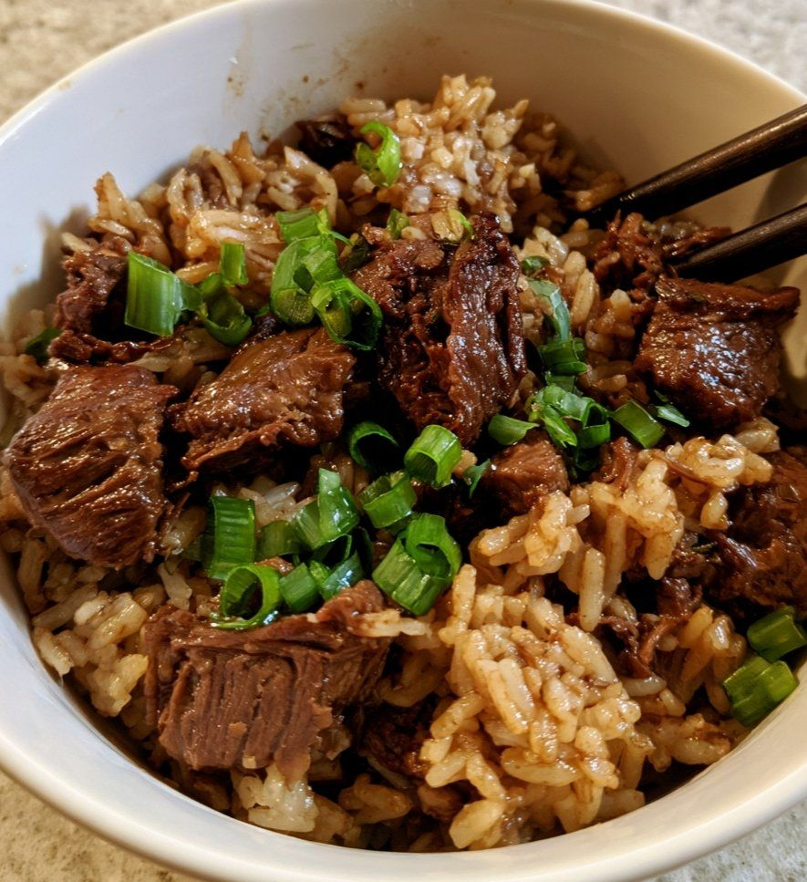

Smoky BBQ Beef & Pepper Rice Bowl

- Meal
- Dinner
- Serves
- 6 (scaled ×1.5 from the source's 4)
- Protein
- beef steak
- Cook
- stovetop, rice pot + one skillet · ~30 min active / ~55 min total (brown rice) · easy
- Make-ahead / leftovers
- rice can be made ahead / yes
- Mediterranean
- yes (3 of 4, just)
- WW tier
- moderate
- Status
- Trying out (probation)
Thinly sliced steak rubbed with smoked paprika and cumin, seared, then tossed with sautéed peppers and onion in a quick smoky BBQ sauce and folded into garlicky smoked-paprika rice. Not Korean Beef Bowls (ground beef, soy-ginger) and not Slow Cooker Dump BBQ Pulled Pork.
Ingredients
Scaled ×1.5 for 6. Source amounts (serves 4) in [brackets]. ≈ marks a rounding.
Beef
- 750 g (≈1⅔ lb) beef steak, thinly sliced [500 g]
- 3 tbsp olive oil [2 tbsp]
- 6 garlic cloves, minced [4]
- 1½ small onions (or 1 medium), finely sliced [1 small]
- 1½ red bell peppers, diced [1]
- 1½ green bell peppers, diced [1]
- 1½ tsp smoked paprika [1 tsp]
- ¾ tsp black pepper [½ tsp]
- ¾ tsp chilli flakes [½ tsp] — kids: cut to ¼ tsp and pass more at the table
- ¾ tsp ground cumin [½ tsp]
- ¾ tsp salt [½ tsp]
BBQ sauce
- 6 tbsp BBQ sauce [4 tbsp] — pick one without Worcestershire/anchovy; see Fish-allergy note
- 1½ tbsp soy sauce [1 tbsp]
- 1½ tbsp Worcestershire sauce [1 tbsp] — fish-free (anchovy-free) Worcestershire
- 1½ tbsp honey or brown sugar [1 tbsp]
- 1½ tbsp tomato paste [1 tbsp]
- 1½ tsp apple cider vinegar [1 tsp]
- ¾ tsp smoked paprika [½ tsp]
- 3 tbsp beef stock or water [2 tbsp]
Rice (house rule: brown rice)
- 3 cups brown rice [2 cups long-grain rice]
- About 6 cups beef stock or water, or per the brown-rice package [3 cups; ×1.5 = 4½ cups is the white-rice amount, brown rice needs more]
- 1½ tbsp butter [1 tbsp]
- 3 garlic cloves, minced [2]
- ¾ small onion, finely chopped [½ small]
- ¾ tsp smoked paprika [½ tsp]
- Salt to taste
Garnish
- Fresh parsley or coriander, chopped
- Sliced spring onions
- A sprinkle of chilli flakes
- Toasted sesame seeds (optional)
- Lime wedges (source tip)
Method
Source method (Spoon&Soul), with the house brown-rice timing.
- Cook the rice: rinse the brown rice. Melt the butter in a saucepan over medium; cook the garlic and onion until fragrant. Stir in the rice and smoked paprika, add the stock or water and salt. Boil, then cover, reduce to low and cook until tender and the liquid is absorbed (brown rice: about 40–45 minutes). Rest 5–10 minutes, then fluff.
- Make the BBQ sauce: mix the BBQ sauce, soy sauce, Worcestershire, honey, tomato paste, vinegar, smoked paprika and stock until smooth.
- Season the beef: toss the sliced beef with the smoked paprika, cumin, black pepper, chilli flakes and salt.
- Sear the beef: heat the olive oil in a large skillet over medium-high. Sear the beef in batches (don't crowd — at ×1.5 that's 2–3 batches) until browned and cooked through. Move to a plate.
- Cook the vegetables: in the same skillet, sauté the onion and peppers 3–4 minutes until slightly softened but still crisp. Add the garlic for 30 seconds.
- Sauce it: return the beef, pour in the BBQ sauce and toss. Simmer 3–5 minutes until slightly thickened and glossy.
- Combine: add the cooked rice and toss until evenly coated (or serve the beef over the rice if the skillet is too small for 3 cups of rice). Taste and adjust.
- Serve: spoon into bowls and garnish with herbs, spring onions, chilli flakes, sesame seeds and a squeeze of lime.
Notes
- Servings: source serves 4; scaled ×1.5. The ⅔-lb and half-pepper amounts are the only awkward ones; 1 medium onion and 3 peppers (any mix) are fine.
- Rice: brown rice per house rule; liquid and time raised for brown rice. 3 cups dry is generous — leftovers are likely.
- Red meat: steak as the main counts toward the ≤2 red/processed-meat cap.
- WW tier moderate: lean steak, plenty of peppers and brown rice, but sugary BBQ sauce and honey. Classed like the house's other beef bowls/stir-fries (Korean Beef Bowls).
- Mediterranean ✓ (3 of 4, just): olive oil is the main fat ✓, peppers and onion ✓, brown rice ✓; red meat ✗. It clears the Diet Lens bar only because of the house brown-rice swap and the olive oil — Korean Beef Bowls misses it on oil. Still one of the week's red-meat nights.
- Tomato: 1½ tbsp tomato paste only — does not count as the week's cooked tomato sauce.
- Legumes / fish: none.
- a fish-free plate / hidden fish: not a fish dish, but Worcestershire normally contains anchovy and many BBQ sauces contain Worcestershire. Use a fish-free Worcestershire and a BBQ sauce whose label lists no Worcestershire/anchovy. Check the beef stock label too.
- Source serving ideas: cucumber-tomato salad, grilled corn, coleslaw, or garlic yogurt.
- Nutrition: not given by the source; none listed here.
Source: Spoon&Soul (@SpoonandSoul), via X: https://x.com/SpoonandSoul/status/2119564979468947469